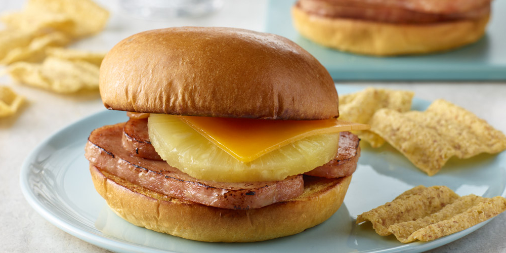

Hawaiian SPAM Sliders

Description
Most Hawaiian slider recipes use sliced ham. In this recipe, however, we will be using sus domesticus' ultimate form: SPAM!
Ingredients
- Hawaiian rolls
- Butter
- SPAM
- Swiss or Muenster cheese
- Pineapple slices
Steps
- Cut hawaiian rolls in half like a hamburger bun and butter.
- Brown the hawaiian rolls in a pan.
- Slice SPAM into roll-sized pieces and fry.
- Once both sides are fried, place cheese on top and allow it to melt.
- Place SPAM slices onto hawaiian rolls.
- Top SPAM with a pineapple slice.